第 1 講：JoS QUANTUM 量子計算平台主題 1 — 架構總覽、抽象模型與數學基礎
本講作為「JoS QUANTUM 量子計算平台」系列課程的第一講，主要目標為：
- 建立對 JoS QUANTUM 平台的整體認識：設計哲學、系統組成、核心抽象。
- 從數學與物理層面，嚴謹地刻畫該平台背後採用的量子計算模型與符號約定。
- 說明 JoS QUANTUM 中「量子電路」、「算子」、「噪聲」、「測量」等概念的抽象層級，以及它們與實際數學結構的對應。
- 以簡單範例展示平台的計算流程，為後續更深入的算法與模擬打下基礎。
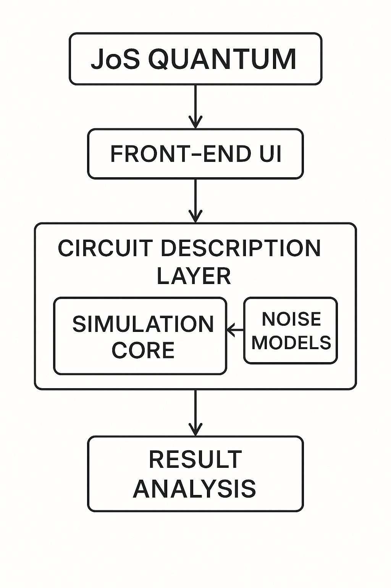
圖 1-15: high-level architecture diagram of JoS QUANTUM platform components: front-end UI, circuit description layer, simulation core, noise models, result analysis. Use labeled boxes and arrows, minimalistic technical style.
Prompt: high-level architecture diagram of JoS QUANTUM platform components: front-end UI, circuit description layer, simulation core, noise models, result analysis. Use labeled boxes and arrows, minimalistic technical style.
1. JoS QUANTUM 平台概觀與設計哲學
1.1 平台定位與目標使用者
JoS QUANTUM 是一個以研究與工程為導向的量子計算平台，強調：
- 可組合性 (composability)：量子電路、通道、噪聲模型與控制流程應能以模組化的方式組合。
- 數學嚴謹性：所有抽象背後都有明確的線性代數與量子資訊理論基礎。
- 模擬與分析：提供對態向量、密度矩陣、通道及雜訊的精準模擬與分析。
- 與經典運算整合：方便進行混合量子－經典演算法的實驗，例如 VQE、QAOA 等。
目標用戶包括：
- 研究量子演算法與量子資訊的博士生與研究者；
- 從事量子工程與控制的實驗與理論人員；
- 需要自訂噪聲模型、通道或量子控制序列的開發者。
1.2 JoS QUANTUM 的核心抽象層次
從抽象層次來看，我們可以將 JoS QUANTUM 的世界分為幾個關鍵層：
- 量子態層 (state layer)：描述純態 \( \lvert \psi \rangle \) 或混合態 \( \rho \) 的結構與演化。
- 算子與通道層 (operator/channel layer)：包括單位算子、測量、CPTP 通道與一般超算子。
- 電路層 (circuit layer)：以時間順序或 DAG 形式組合算子，定義可執行的量子程序。
- 噪聲與裝置層 (noise/device layer)：定義具體實際裝置的限制、噪聲模型與校正方法。
- 前端與介面層 (front-end/API layer)：提供使用者編寫、執行與分析量子實驗的介面。
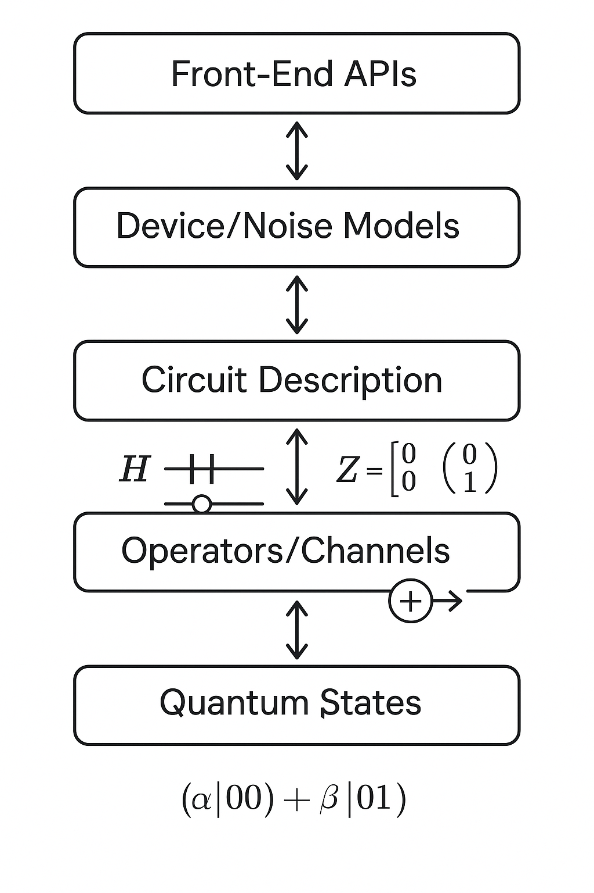
圖 1-14: layered architecture diagram showing quantum states at the bottom, then operators/channels, then circuit description, then device/noise models, and finally front-end APIs at the top. Each layer has arrows up and down indicating abstraction.
Prompt: layered architecture diagram showing quantum states at the bottom, then operators/channels, then circuit description, then device/noise models, and finally front-end APIs at the top. Each layer has arrows up and down indicating abstraction.
本講主要集中在前 3 層的數學與抽象建構，為後續主題（如噪聲建模、演算法實作、控制優化）鋪路。
2. JoS QUANTUM 背後的數學模型：Hilbert 空間與量子態
2.1 單量子比特與多量子比特 Hilbert 空間
JoS QUANTUM 以標準的有限維 Hilbert 空間作為量子態的基礎。對於單一量子比特，其 Hilbert 空間為
\[
\mathcal{H}_2 \cong \mathbb{C}^2,
\]
搭配計算基底
\[
\{ \lvert 0 \rangle, \lvert 1 \rangle \}.
\]
一個任意的純態可表示為
\[
\lvert \psi \rangle = \alpha \lvert 0 \rangle + \beta \lvert 1 \rangle,\quad \alpha,\beta \in \mathbb{C},\quad \lvert \alpha \rvert^2 + \lvert \beta \rvert^2 = 1.
\]
對於 \(n\) 個量子比特，系統 Hilbert 空間為
\[
\mathcal{H}_{2^n} = \underbrace{\mathcal{H}_2 \otimes \cdots \otimes \mathcal{H}_2}_{n\ \text{times}}.
\]
任何純態 \( \lvert \Psi \rangle \in \mathcal{H}_{2^n} \) 可寫為
\[
\lvert \Psi \rangle = \sum_{x \in \{0,1\}^n} \alpha_x \lvert x \rangle,\quad
\sum_{x} \lvert \alpha_x \rvert^2 = 1.
\]
在 JoS QUANTUM 的實作層面，此類態向量通常以長度 \(2^n\) 的複數向量實現，並透過線性代數庫（例如 BLAS/LAPACK 或其他高效數值後端）進行操作。而從使用者角度，平台會盡量將這些低層細節抽象掉，使你只需思考抽象的態與算子即可。
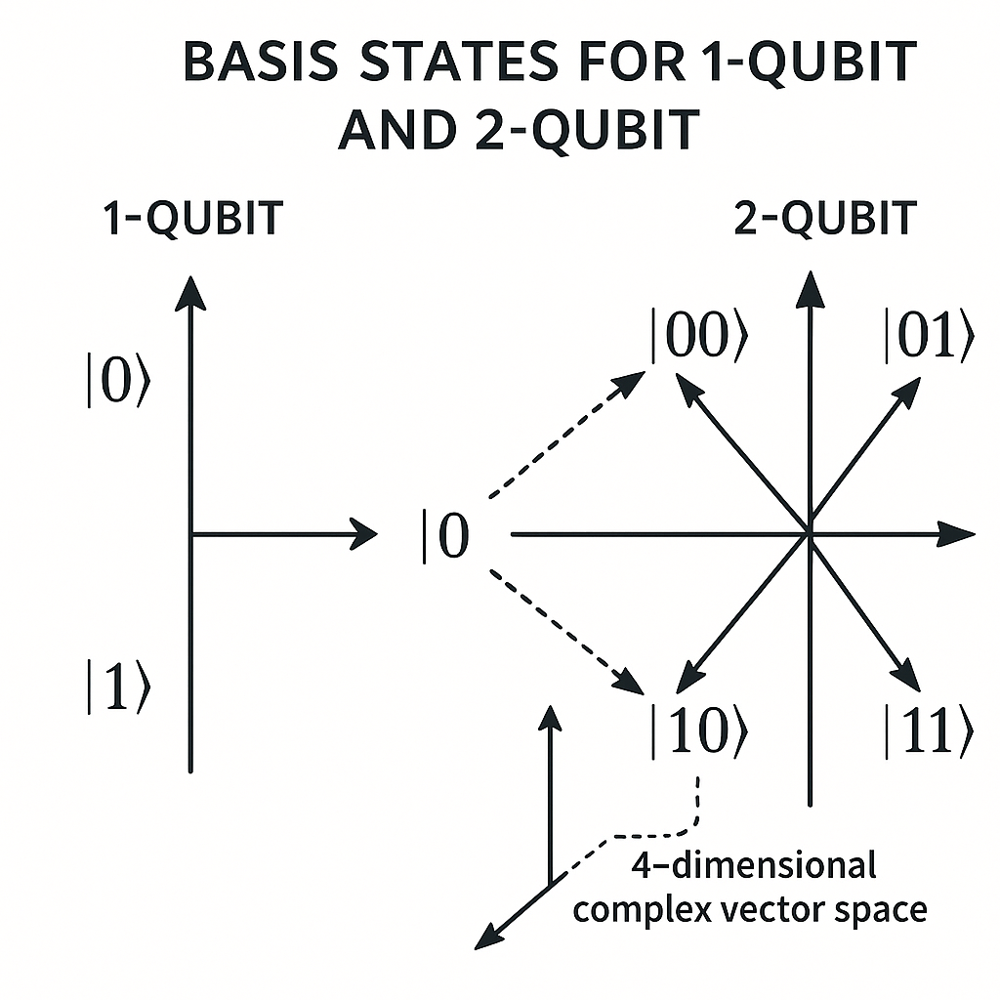
, |1>, and tensor products |00>, |01>, |10>, |11>, with arrows indicating how vectors are combined in a 4-dimensional complex vector space.">
圖 1-13: diagram of basis states for 1-qubit and 2-qubit systems, showing |0>, |1>, and tensor products |00>, |01>, |10>, |11>, with arrows indicating how vectors are combined in a 4-dimensional complex vector space.
Prompt: diagram of basis states for 1-qubit and 2-qubit systems, showing |0>, |1>, and tensor products |00>, |01>, |10>, |11>, with arrows indicating how vectors are combined in a 4-dimensional complex vector space.
2.2 密度矩陣形式與混合態
對於研究者而言，僅有純態是不足的，因為噪聲、退相干與部分跡化等現象自然地將我們帶入混合態的框架。因此，JoS QUANTUM 同時支持以下兩種表示：
- 態向量表示：\( \lvert \psi \rangle \in \mathcal{H} \)
- 密度矩陣表示：\( \rho \in \mathcal{D}(\mathcal{H}) \)，其中 \( \mathcal{D}(\mathcal{H}) \) 為密度算子集合。
密度矩陣定義為：
\[
\rho = \sum_i p_i \lvert \psi_i \rangle \langle \psi_i \rvert,
\]
其中 \( p_i \ge 0, \sum_i p_i = 1 \)，且每個 \( \lvert \psi_i \rangle \) 為歸一化向量。密度矩陣滿足：
\[
\rho^\dagger = \rho,\quad \rho \succeq 0,\quad \operatorname{Tr}(\rho) = 1.
\]
純態可視為特殊情況：當系統處於確定的純態 \( \lvert \psi \rangle \) 時，
\[
\rho = \lvert \psi \rangle \langle \psi \rvert,
\]
此時 \( \rho \) 為秩 1 投影算子，滿足 \( \rho^2 = \rho \) 且
\[
\operatorname{Tr}(\rho^2) = 1.
\]
對於一般混合態，則有 \( \operatorname{Tr}(\rho^2) < 1 \)，這在 JoS QUANTUM 中是分析雜訊與糾纏劣化的實用指標之一。
2.3 部分跡 (partial trace) 與子系統
在進行複雜量子電路模擬時，常需觀察某個子系統 \(A\) 的狀態，而忽略其環境或其他子系統 \(B\)。形式上，若整體系統的 Hilbert 空間為
\[
\mathcal{H} = \mathcal{H}_A \otimes \mathcal{H}_B,
\]
其密度矩陣為 \( \rho_{AB} \)，則子系統 \(A\) 的約化密度矩陣為
\[
\rho_A = \operatorname{Tr}_B (\rho_{AB}),
\]
其中 \( \operatorname{Tr}_B \) 為對 \(B\) 空間進行的部分跡。
具體而言，若 \( \{ \lvert b_j \rangle \} \) 為 \( \mathcal{H}_B \) 的正交基底，則
\[
\rho_A = \sum_j \langle b_j \rvert \rho_{AB} \lvert b_j \rangle.
\]
在 JoS QUANTUM 中，部分跡操作被封裝成高階 API 呼叫，用來：
- 在存在環境或輔助比特 (ancilla) 的模擬中，萃取系統態；
- 實作量子通道的 Choi–Jamiołkowski 對應與糾纏測量；
- 建立多粒子糾纏的定量分析工具。
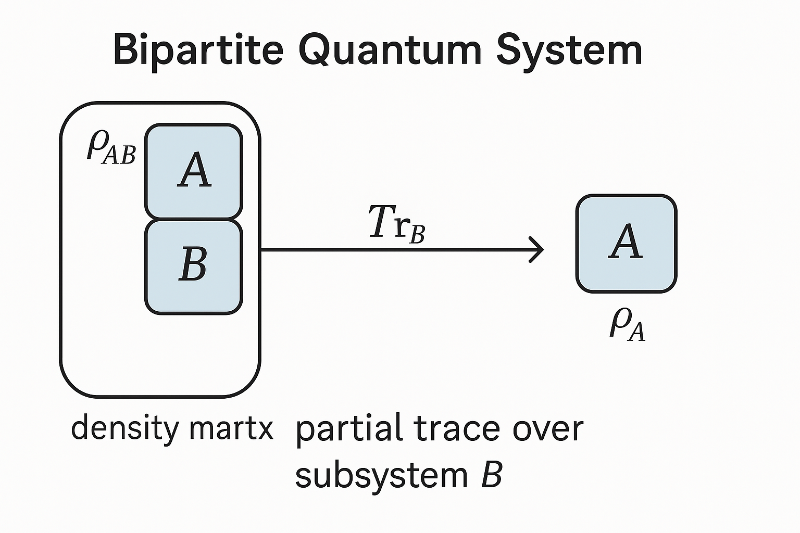
圖 1-8: visual representation of a bipartite quantum system A and B, with a density matrix rho_AB, and a partial trace over subsystem B resulting in rho_A. Use a block matrix or tensor network style illustration.
Prompt: visual representation of a bipartite quantum system A and B, with a density matrix rho_AB, and a partial trace over subsystem B resulting in rho_A. Use a block matrix or tensor network style illustration.
3. 線性算子、量子門與通道：JoS QUANTUM 的運算核心
3.1 單位算子與量子門 (unitary gates)
在理想化、無噪聲的情況下，封閉量子系統的時間演化可由單位算子描述：
\[
U : \mathcal{H} \to \mathcal{H},\quad U^\dagger U = U U^\dagger = I.
\]
對於 \(n\) 個量子比特，典型的基本單位門包括：
- 單比特旋轉門，例如
\[
R_x(\theta) = e^{-i \theta X / 2},\quad
R_y(\theta) = e^{-i \theta Y / 2},\quad
R_z(\theta) = e^{-i \theta Z / 2},
\]
其中 Pauli 矩陣為
\[
X = \begin{pmatrix}
0 & 1\\
1 & 0
\end{pmatrix},\quad
Y = \begin{pmatrix}
0 & -i\\
i & 0
\end{pmatrix},\quad
Z = \begin{pmatrix}
1 & 0\\
0 & -1
\end{pmatrix}.
\]
- 雙比特控制門，例如 CNOT：
\[
\operatorname{CNOT} = \lvert 0 \rangle \langle 0 \rvert \otimes I + \lvert 1 \rangle \langle 1 \rvert \otimes X.
\]
JoS QUANTUM 在實作上將門視為作用在某些特定位址 (qubit indices) 上的算子 \( U \)，再透過張量積與對應的嵌入 (embedding) 自動生成在整體 Hilbert 空間上的表示。形式上，對於作用於第 \(k\) 個量子比特的單比特門 \(U^{(k)}\)，其在 \(n\) 比特空間中的表示為
\[
\widetilde{U}^{(k)} = I^{\otimes (k-1)} \otimes U \otimes I^{\otimes (n-k)}.
\]
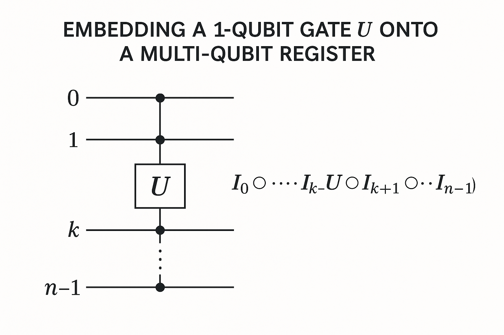
圖 1-9: illustration of embedding a 1-qubit gate U onto a multi-qubit register, with a circuit line showing multiple qubits and a labeled gate on the kth wire, and an accompanying tensor product expression.
Prompt: illustration of embedding a 1-qubit gate U onto a multi-qubit register, with a circuit line showing multiple qubits and a labeled gate on the kth wire, and an accompanying tensor product expression.
3.2 量子通道：CPTP 映射與 Kraus 表示
在實際系統與 JoS QUANTUM 的噪聲模擬中，我們通常需要處理一般的量子通道，而非僅僅是單位算子。形式上，一個量子通道 \( \mathcal{E} \) 是一個完全正 (completely positive) 且跡保持 (trace-preserving) 的線性映射：
\[
\mathcal{E} : \mathcal{B}(\mathcal{H}_\text{in}) \to \mathcal{B}(\mathcal{H}_\text{out}),
\]
其中 \( \mathcal{B}(\mathcal{H}) \) 為 Hilbert 空間上有界線性算子的集合。
任何 CPTP 通道均可寫成 Kraus 表示：
\[
\mathcal{E}(\rho) = \sum_{k} E_k \rho E_k^\dagger,
\]
其中 Kraus 算子 \(E_k\) 滿足
\[
\sum_k E_k^\dagger E_k = I.
\]
JoS QUANTUM 在內部會以不同形式來儲存與操作量子通道，包括：
- Kraus 表示 \( \{E_k\} \)；
- Choi 矩陣表示 \( J(\mathcal{E}) \)；
- Liouville / 超算子表示（將通道視為作用在向量化密度矩陣上的矩陣）。
在數值實作上，Kraus 表示常用於模擬具體噪聲模型（如退相干、幅衰減），而超算子形式則更適合做組合與代數分析。平臺提供了這些表示之間的轉換函式，使研究者可根據需求選擇最適合的形式。
3.2.1 例：退相干通道 (dephasing channel)
考慮單比特退相干通道 \( \mathcal{E}_p \)，以 Kraus 算子表示為：
\[
E_0 = \sqrt{1-p}\, I,\quad
E_1 = \sqrt{p}\, Z.
\]
則對任意單比特態 \( \rho \)：
\[
\mathcal{E}_p(\rho) = (1-p) \rho + p\, Z \rho Z.
\]
如果我們將 \( \rho \) 寫為 Bloch 向量形式：
\[
\rho = \frac{1}{2}\bigl(I + \vec{r}\cdot\vec{\sigma}\bigr)
= \frac{1}{2}\bigl(I + r_x X + r_y Y + r_z Z\bigr),
\]
則可計算：
\[
Z X Z = -X,\quad
Z Y Z = -Y,\quad
Z Z Z = Z.
\]
因此
\[
Z \rho Z = \frac{1}{2}\bigl(I - r_x X - r_y Y + r_z Z\bigr).
\]
代入得到
\[
\mathcal{E}_p(\rho)
= \frac{1}{2}\Bigl[
I + \bigl((1-2p) r_x\bigr) X + \bigl((1-2p) r_y\bigr) Y + r_z Z
\Bigr].
\]
也就是說，在 Bloch 球上，此通道對 \(x\) 與 \(y\) 分量施加因子 \(1-2p\) 的收縮，而保留 \(z\) 分量。JoS QUANTUM 中的退相干噪聲模組即基於類似的 Kraus 架構，使研究者可方便地設置不同退相干強度 \(p\) 並觀察其對演算法性能的影響。
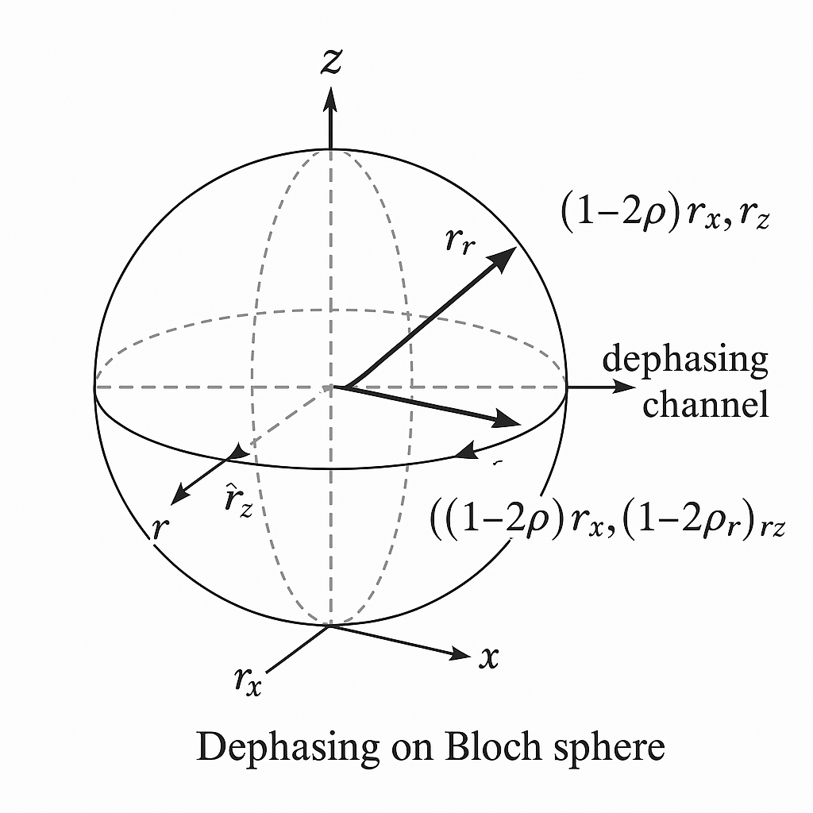
圖 1-2: Bloch sphere illustration showing a vector with components (rx, ry, rz) being mapped to ((1-2p)rx, (1-2p)ry, rz) by a dephasing channel, with arrows indicating contraction in the equatorial plane.
Prompt: Bloch sphere illustration showing a vector with components (rx, ry, rz) being mapped to ((1-2p)rx, (1-2p)ry, rz) by a dephasing channel, with arrows indicating contraction in the equatorial plane.
3.3 超算子 (superoperator) 與 Liouville 表示
為了更方便地在數學上操作與組合多個通道，我們可以採用向量化 (vectorization) 技巧。定義向量化映射
\[
\operatorname{vec}: \mathcal{B}(\mathcal{H}) \to \mathcal{H} \otimes \mathcal{H},
\]
對於矩陣 \(A\)（以某固定基底表示），將其欄依序堆疊成一個長向量。
在這種表示下，若
\[
\mathcal{E}(\rho) = \sum_k E_k \rho E_k^\dagger,
\]
則可構造一個矩陣 \( \mathsf{S}_{\mathcal{E}} \)（稱超算子或 Liouville 表示）使得
\[
\operatorname{vec}\bigl(\mathcal{E}(\rho)\bigr) = \mathsf{S}_{\mathcal{E}}\, \operatorname{vec}(\rho).
\]
具體來說：
\[
\mathsf{S}_{\mathcal{E}} = \sum_k E_k \otimes \overline{E_k},
\]
其中 \( \overline{E_k} \) 為 \(E_k\) 的複共軛矩陣（對應於固定基底）。
此形式有幾個重要優點：
- 通道的組合 \( \mathcal{E}_2 \circ \mathcal{E}_1 \) 對應於矩陣相乘
\[
\mathsf{S}_{\mathcal{E}_2 \circ \mathcal{E}_1}
= \mathsf{S}_{\mathcal{E}_2}\, \mathsf{S}_{\mathcal{E}_1}.
\]
- 可直接對通道進行特徵分解分析，例如找尋不變子空間或長時間動力學極限。
- 方便利用現有的線性代數優化與分解工具。
JoS QUANTUM 在面向研究者的高階 API 中，允許你選擇以 Kraus、Choi 或 Liouville 形式指定與分析通道，這在處理複雜噪聲串接或通道鑑定 (process tomography) 時特別重要。
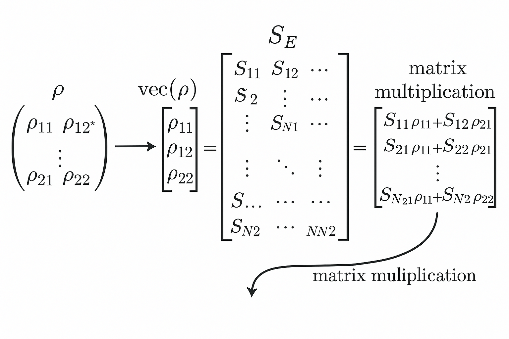
圖 1-12: schematic showing the mapping from a density matrix rho to a vector vec(rho), and a superoperator S_E acting as a big matrix, with arrows representing the correspondence between channel composition and matrix multiplication.
Prompt: schematic showing the mapping from a density matrix rho to a vector vec(rho), and a superoperator S_E acting as a big matrix, with arrows representing the correspondence between channel composition and matrix multiplication.
4. JoS QUANTUM 的電路抽象：從算子到可執行程序
4.1 電路作為時間有序算子序列
在 JoS QUANTUM 中，一個「量子電路」從數學觀點可以視為一個有序的算子序列
\[
\mathcal{C} = (O_1, O_2, \dots, O_L),
\]
每個 \(O_j\) 可以是：
- 單位算子 \( U_j \)（理想量子門）；
- 量子通道 \( \mathcal{E}_j \)（噪聲、開放系統演化）；
- POVM 測量或投影測量 \( \{M_{j,\alpha}\} \)；
- 基於經典資訊的條件操作（例如 if-else 結構）。
若我們先忽略測量與經典分支，則此電路 \( \mathcal{C} \) 定義了一個總通道：
\[
\mathcal{E}_{\mathcal{C}} = O_L \circ O_{L-1} \circ \cdots \circ O_1,
\]
並且對任意初始態 \( \rho_{\text{in}} \) 有
\[
\rho_{\text{out}} = \mathcal{E}_{\mathcal{C}}(\rho_{\text{in}}).
\]
在實際 JoS QUANTUM 程式碼中，你會將這些 \(O_j\) 以高階物件（如 Gate、Channel、Measurement）表達，再由平台將它們編譯／轉譯為底層數值運算。此處的重點在於：
- 從使用者角度，電路是「可組合」且「可重用」的高階物件；
- 從數學角度，它對應於一個具體的 CPTP 通道或更一般的測量流程。
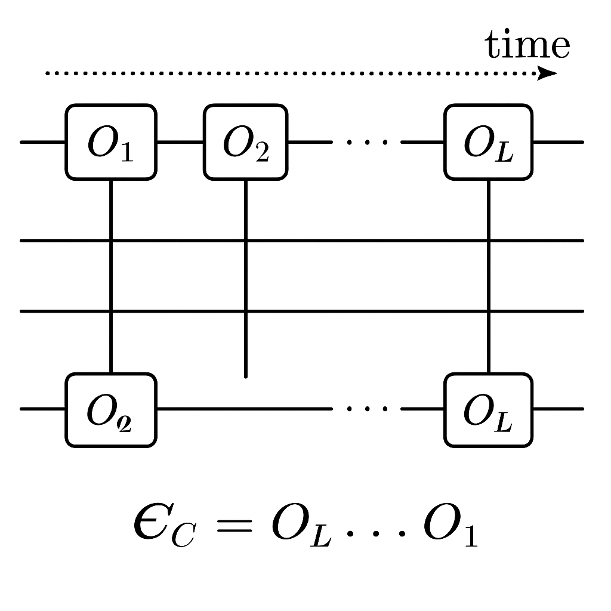
圖 1-10: circuit diagram with several time-ordered gates and channels, labeled O1, O2, ..., OL, and an accompanying equation showing the composed channel E_C = O_L ... O_1. Use a timeline axis to indicate order.
Prompt: circuit diagram with several time-ordered gates and channels, labeled O1, O2, ..., OL, and an accompanying equation showing the composed channel E_C = O_L ... O_1. Use a timeline axis to indicate order.
4.2 測量與經典控制：非單位演化與分支
測量在量子電路中扮演核心角色，特別是在混合量子－經典演算法中。數學上，測量可用一組 Kraus 算子 \(m\) 的算符，寫成大括號 \(M_m\)。-->\( \{ M_m \} \) 描述，滿足
\[
\sum_m M_m^\dagger M_m = I.
\]
當系統處於態 \( \rho \) 時，測得結果 \(m\) 的機率為
\[
p(m) = \operatorname{Tr}(M_m \rho M_m^\dagger),
\]
測量後的條件態（在得知結果 \(m\) 的條件下）為
\[
\rho_m = \frac{M_m \rho M_m^\dagger}{p(m)}.
\]
JoS QUANTUM 在抽象層上將「測量」視為一個產生隨機經典結果並對量子態做非單位更新的操作。若之後根據測量結果 \(m\) 執行不同的量子操作（例如 feed-forward 控制或 adaptative circuit），則整體流程數學上可視為條件通道：
\[
\mathcal{E}(\rho) = \sum_m \mathcal{F}_m\bigl(M_m \rho M_m^\dagger\bigr),
\]
其中 \( \mathcal{F}_m \) 為在結果為 \(m\) 時執行的後續通道。
在模擬層面，JoS QUANTUM 允許兩種觀點：
- 逐軌跡 (trajectory) 模擬：隨機抽樣測量結果，更新態並記錄路徑。
- 全通道 (ensemble) 模擬：直接追蹤非條件密度矩陣
\[
\overline{\rho}' = \sum_m M_m \overline{\rho} M_m^\dagger,
\]
機率分佈則由對角元給出。
這兩種模式在研究量子訊息流與雜訊平均效應時皆極為有用，平台 API 允許使用者選擇更適合的方式。
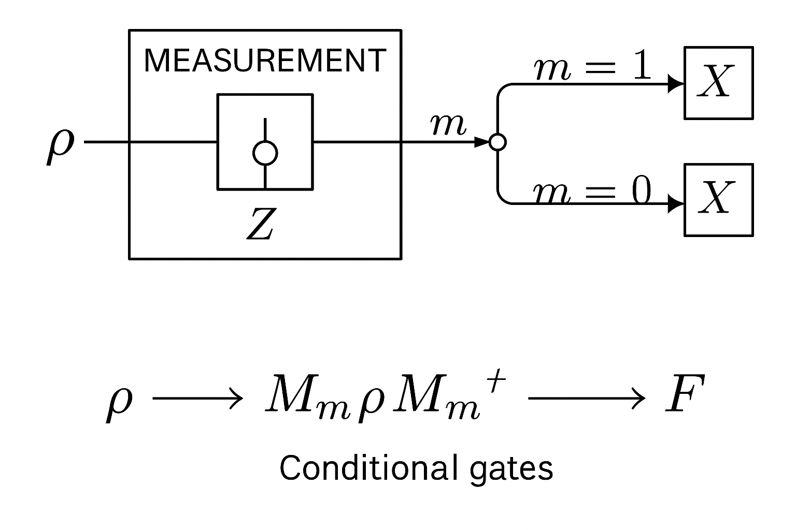
圖 1-1: circuit diagram with a measurement box on one qubit, classical wire carrying the outcome m, and conditional gates applied depending on m. Also show the mathematical flow from rho to M_m rho M_m^\dagger and then to F_m.
Prompt: circuit diagram with a measurement box on one qubit, classical wire carrying the outcome m, and conditional gates applied depending on m. Also show the mathematical flow from rho to M_m rho M_m^\dagger and then to F_m.
4.3 簡單範例：單比特 Hadamard 測量流程
考慮最基本的例子：將單比特初態 \( \lvert 0 \rangle \) 經過 Hadamard 門 \(H\)，然後在計算基底上測量。Hadamard 門定義為
\[
H = \frac{1}{\sqrt{2}}\begin{pmatrix}
1 & 1\\
1 & -1
\end{pmatrix}.
\]
初態密度矩陣為
\[
\rho_{\text{in}} = \lvert 0 \rangle\langle 0 \rvert
= \begin{pmatrix}
1 & 0\\
0 & 0
\end{pmatrix}.
\]
經過 Hadamard 門作用後：
\[
\rho' = H \rho_{\text{in}} H^\dagger
= H \lvert 0 \rangle\langle 0 \rvert H^\dagger
= \lvert + \rangle\langle + \rvert,
\]
其中
\[
\lvert + \rangle = \frac{1}{\sqrt{2}}(\lvert 0 \rangle + \lvert 1 \rangle).
\]
在計算基底上測量可用 Kraus 算子
\[
M_0 = \lvert 0 \rangle\langle 0 \rvert,\quad
M_1 = \lvert 1 \rangle\langle 1 \rvert
\]
描述。則測得結果 \(0\) 的機率為
\[
p(0) = \operatorname{Tr}(M_0 \rho' M_0^\dagger)
= \operatorname{Tr}(\lvert 0 \rangle\langle 0 \rvert \, \rho')
= \langle 0 \rvert \rho' \lvert 0 \rangle
= \frac{1}{2},
\]
同理 \(p(1) = \frac{1}{2}\)。測量後條件態分別為
\[
\rho_0 = \lvert 0 \rangle\langle 0 \rvert,\quad
\rho_1 = \lvert 1 \rangle\langle 1 \rvert.
\]
在 JoS QUANTUM 中，這個流程的高階結構可概念化為：
- 定義單比特系統與初態 \( \lvert 0 \rangle \)。
- 在該比特上加入 Hadamard 門。
- 加入計算基底測量操作。
- 執行多次實驗（shots），收集統計分佈 \(\{p(0), p(1)\}\)。
此例雖極為基礎，但其流程（定義系統 → 組裝電路 → 執行與測量 → 解析結果）正是平臺中更複雜實驗（如多比特糾纏生成、雜訊敏感度分析、參數優化等）的基礎模板。
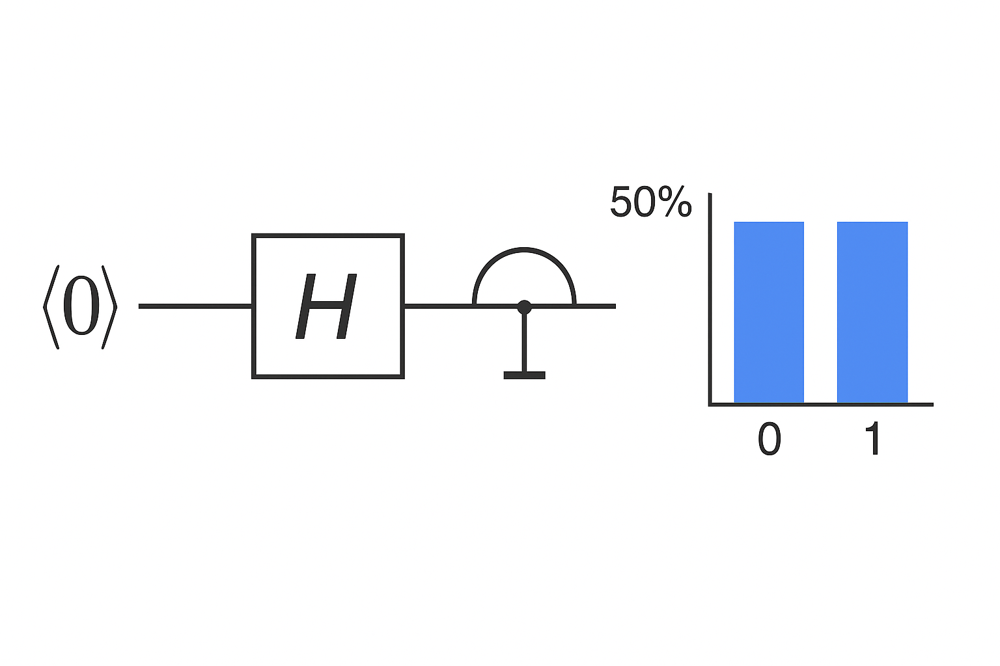
, a Hadamard gate H, then a measurement in the computational basis, with a histogram showing 50% outcome 0 and 50% outcome 1.">
圖 1-3: simple 1-qubit circuit with an initial |0>, a Hadamard gate H, then a measurement in the computational basis, with a histogram showing 50% outcome 0 and 50% outcome 1.
Prompt: simple 1-qubit circuit with an initial |0>, a Hadamard gate H, then a measurement in the computational basis, with a histogram showing 50% outcome 0 and 50% outcome 1.
5. JoS QUANTUM 中的模擬核心與數值考量（概述）
5.1 態向量模擬 vs. 密度矩陣模擬
平台在數值層面通常提供兩種主要模擬模式：
- 態向量模擬 (state-vector simulation)：
- 追蹤 \( \lvert \psi \rangle \in \mathbb{C}^{2^n} \)。
- 適用於無噪聲或僅有單位演化的場景。
- 記憶複雜度 \(O(2^n)\)。
- 密度矩陣模擬 (density-matrix simulation)：
- 追蹤 \( \rho \in \mathbb{C}^{2^n \times 2^n} \)。
- 可自然表達通道、噪聲與部分跡等操作。
- 記憶複雜度 \(O(4^n)\)，因此僅適合較小 \(n\) 或有結構可利用時。
JoS QUANTUM 在 API 層通常會讓使用者指定使用哪一種模擬模式，或由平臺根據電路內容（是否包含非單位噪聲、是否需要追蹤混合態）自動選擇。從研究角度，這讓我們可以在精準度與效能之間做有意義的權衡。
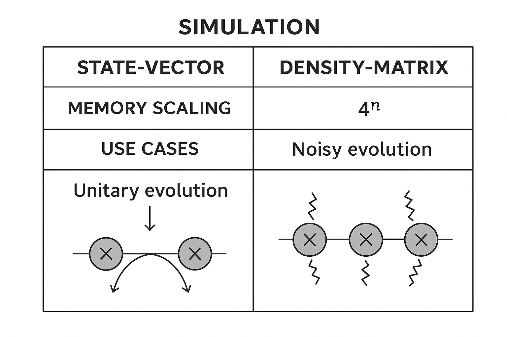
圖 1-11: comparison chart or table between state-vector and density-matrix simulation, showing memory scaling 2^n vs 4^n, and use-cases like unitary evolution vs noisy evolution.
Prompt: comparison chart or table between state-vector and density-matrix simulation, showing memory scaling 2^n vs 4^n, and use-cases like unitary evolution vs noisy evolution.
5.2 張量積結構與局部操作的效率
在實作效率上，一個關鍵原理是利用量子態的張量積結構與操作的局部性。舉例：
對於 \(n\) 比特態向量
\[
\lvert \Psi \rangle = \sum_{x_1,\dots,x_n \in \{0,1\}} \alpha_{x_1,\dots,x_n}
\lvert x_1,\dots,x_n \rangle,
\]
若我們作用一個單比特門 \(U\) 在第 \(k\) 個比特上，其本質上對所有基態的兩兩分組（對應於第 \(k\) 比特為 0 或 1）做 \(2 \times 2\) 線性變換。
具體而言，若我們固定除了第 \(k\) 位以外的 bits，將其組成一個索引 \(y\)，則態向量元可分組為
\[
(\alpha_{y,0}, \alpha_{y,1})^\top,
\]
在施加 \(U\) 後變為
\[
\begin{pmatrix}
\alpha'_{y,0}\\
\alpha'_{y,1}
\end{pmatrix}
=
U
\begin{pmatrix}
\alpha_{y,0}\\
\alpha_{y,1}
\end{pmatrix}.
\]
這意味著，我們不需要顯式構造 \(2^n \times 2^n\) 的整體矩陣 \( \widetilde{U}^{(k)} \)，而是可以直接在態向量上做區塊式更新。JoS QUANTUM 的模擬核心即是大量利用這種結構來提升效率，同時保證數學上的正確性。
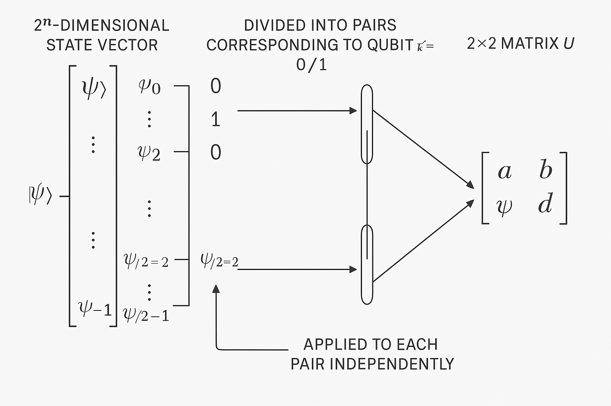
圖 1-7: schematic of a large 2^n-dimensional state vector being divided into pairs corresponding to qubit k = 0/1, and a 2x2 matrix U applied to each pair independently.
Prompt: schematic of a large 2^n-dimensional state vector being divided into pairs corresponding to qubit k = 0/1, and a 2x2 matrix U applied to each pair independently.
5.3 量子通道的組合與指數族 (semigroup) 結構
許多物理上的開放量子系統可用一族連續時間通道 \( \{\mathcal{E}_t\}_{t \ge 0} \) 描述，滿足半群性質：
\[
\mathcal{E}_{t+s} = \mathcal{E}_t \circ \mathcal{E}_s,\quad \mathcal{E}_0 = \operatorname{id}.
\]
在標準 Markovian Lindblad 動力學下，這可寫為
\[
\frac{d\rho}{dt} = \mathcal{L}(\rho),
\]
其中生成元 \( \mathcal{L} \) 為 Lindbladian：
\[
\mathcal{L}(\rho) = -i[H,\rho] + \sum_k \Bigl(
L_k \rho L_k^\dagger - \frac{1}{2}\{L_k^\dagger L_k, \rho\}
\Bigr).
\]
則有
\[
\mathcal{E}_t = e^{t\mathcal{L}}.
\]
在 Liouville 表示下，這變成
\[
\operatorname{vec}\bigl(\mathcal{E}_t(\rho)\bigr)
= e^{t\mathsf{L}} \operatorname{vec}(\rho),
\]
其中 \( \mathsf{L} \) 為對應於 \( \mathcal{L} \) 的矩陣。JoS QUANTUM 能利用數值矩陣指數與分解技巧來模擬此類連續時間動力學，讓研究者能夠精確模擬現實裝置中的退相干與弛豫過程。
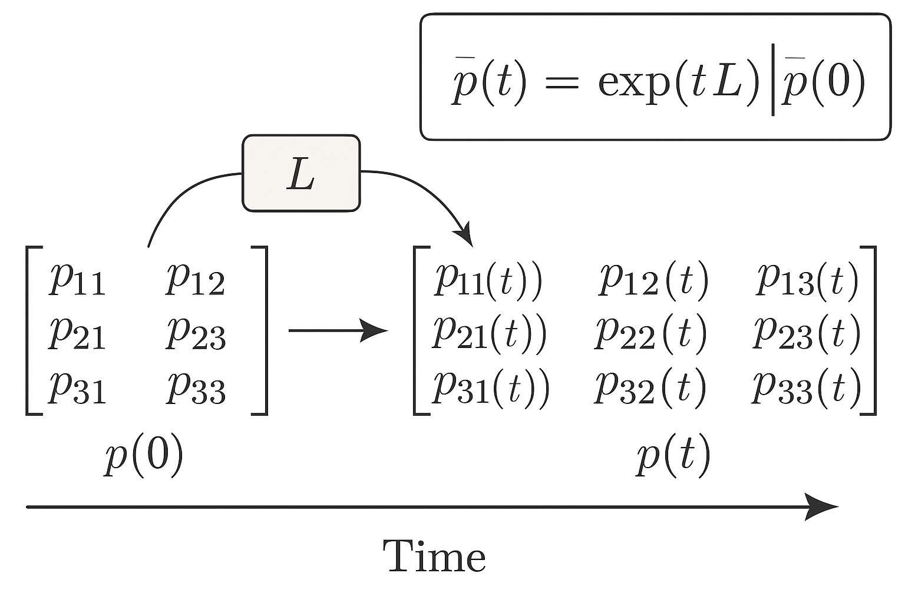
圖 1-4: diagram showing a continuous-time evolution from rho(0) to rho(t) with a generator L, plus an inset matrix equation vec(rho(t)) = exp(t L) vec(rho(0)). Time axis with arrows.
Prompt: diagram showing a continuous-time evolution from rho(0) to rho(t) with a generator L, plus an inset matrix equation vec(rho(t)) = exp(t L) vec(rho(0)). Time axis with arrows.
6. 數學結構與 JoS QUANTUM 抽象的對應總結
本講的重點在於，將 JoS QUANTUM 平台中的主要概念與對應的嚴謹數學結構建立一一映射關係。可整理如下表：
| JoS QUANTUM 抽象 |
數學對應 |
說明 |
| 量子態 (state) |
\( \lvert \psi \rangle \in \mathcal{H} \) 或 \( \rho \in \mathcal{D}(\mathcal{H}) \) |
支持純態與混合態，根據模擬模式選擇表示。 |
| 量子門 (gate) |
單位算子 \( U:\mathcal{H}\to\mathcal{H} \) |
可嵌入多比特 Hilbert 空間，並以高效方式實作局部操作。 |
| 量子通道 (channel) |
CPTP 映射 \( \mathcal{E}: \mathcal{B}(\mathcal{H}) \to \mathcal{B}(\mathcal{H}) \) |
可用 Kraus、Choi 或 Liouville 形式表示與操作。 |
| 測量 (measurement) |
POVM 或 projective measurement，\(\{M_m\}\) |
同時產生經典隨機變數與條件量子態。 |
| 電路 (circuit) |
時間有序通道組合 \( O_L \circ \cdots \circ O_1 \) |
可包含通道、測量與經典控制。 |
| 噪聲模型 |
特定參數化通道族 \( \{\mathcal{E}_\theta\} \) |
如退相干、幅衰減、Lindblad 半群等。 |
| 連續演化模組 |
Lindbladian \( \mathcal{L} \)、通道半群 \(e^{t\mathcal{L}}\) |
支援連續時間動力學與開放系統模擬。 |
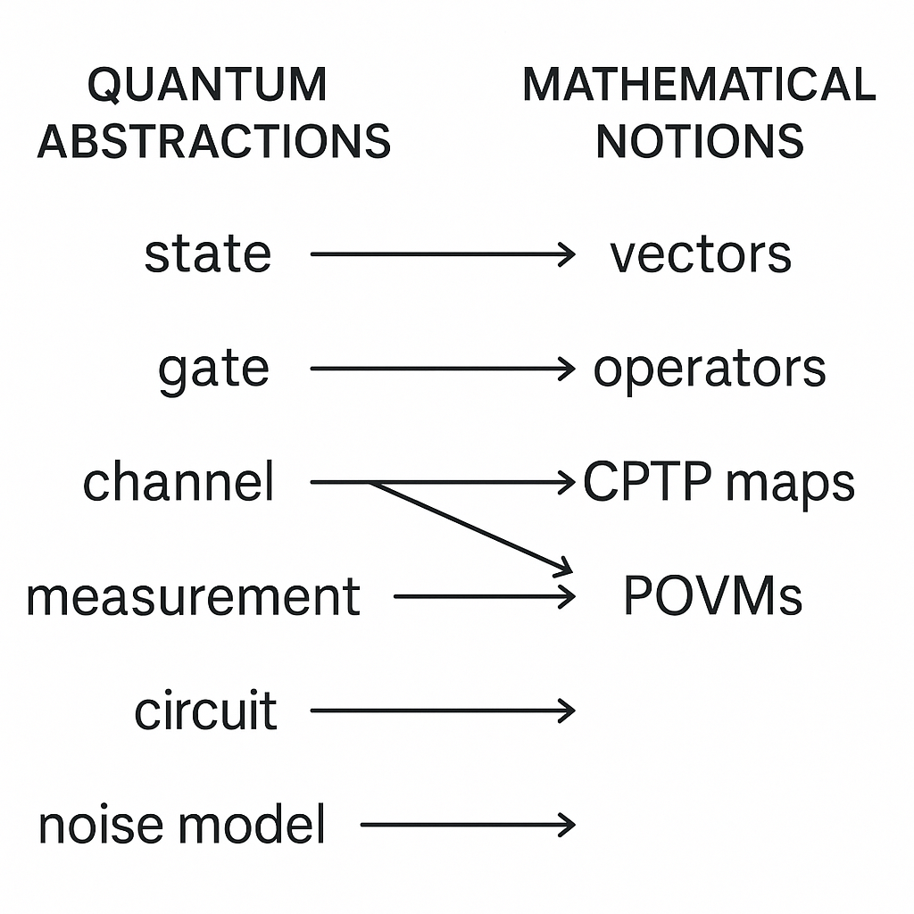
圖 1-5: conceptual mapping graphic with two columns: left column listing JoS QUANTUM abstractions (state, gate, channel, measurement, circuit, noise model), right column listing mathematical notions (vectors, operators, CPTP maps, POVMs), with arrows connecting corresponding items.
Prompt: conceptual mapping graphic with two columns: left column listing JoS QUANTUM abstractions (state, gate, channel, measurement, circuit, noise model), right column listing mathematical notions (vectors, operators, CPTP maps, POVMs), with arrows connecting corresponding items.
7. 小結與後續發展方向
在本講中，我們：
- 從高層架構出發，介紹了 JoS QUANTUM 平台的抽象層次與設計哲學。
- 以 Hilbert 空間、密度矩陣與部分跡為基礎，建構了量子態的數學描述。
- 詳述了量子門、通道、Kraus 表示與 Liouville 表示，並說明它們在 JoS QUANTUM 中的角色。
- 將「電路」形式化為時間有序的算子或通道組合，並討論測量與經典控制的數學架構。
- 概述了態向量與密度矩陣模擬的差異、效率考量，以及連續時間 Lindblad 動力學的基本形式。
接下來的幾講中，我們將在此基礎上深入探討：
- JoS QUANTUM 的實際使用介面：如何用程式碼建立電路、定義通道與噪聲模型。
- 特定演算法的實作：如量子傅立葉轉換、變分量子演算法與量子錯誤更正程式。
- 噪聲工程與靈敏度分析：使用平台的噪聲模組與通道分析工具進行系統設計。
- 與實際裝置的對接：如何將理論電路映射到具體硬體拓撲與門集合。
在進一步深入之前，建議讀者：
- 熟悉 JoS QUANTUM 的基本 API 與專案結構（可參考官方 GitHub 與文件）。
- 準備幾個簡單電路作為練習，例如 Bell 態生成、GHZ 態與簡單量子隨機游走。
- 試著在小系統上同時以態向量與密度矩陣模式模擬，感受它們在性能與表達力上的差異。
在「第 2 講」中，我們將進入更具體的主題：JoS QUANTUM 中的電路建構與演算法雛形，並以量子傅立葉轉換 (QFT) 為例展示平臺的實際操作與數學分析。
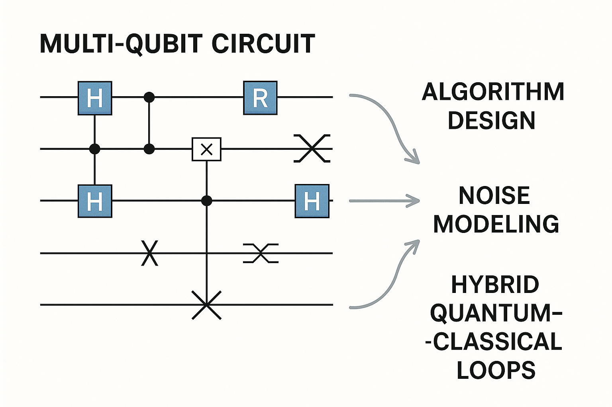
圖 1-6: teaser graphic showing a more complex multi-qubit circuit (e.g., QFT) with labels indicating upcoming topics such as "algorithm design", "noise modeling", and "hybrid quantum-classical loops".
Prompt: teaser graphic showing a more complex multi-qubit circuit (e.g., QFT) with labels indicating upcoming topics such as "algorithm design", "noise modeling", and "hybrid quantum-classical loops".